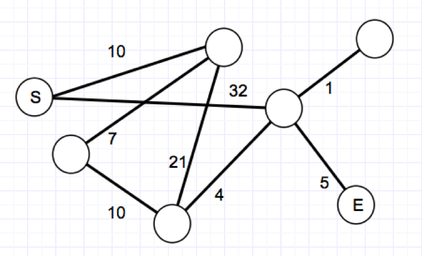
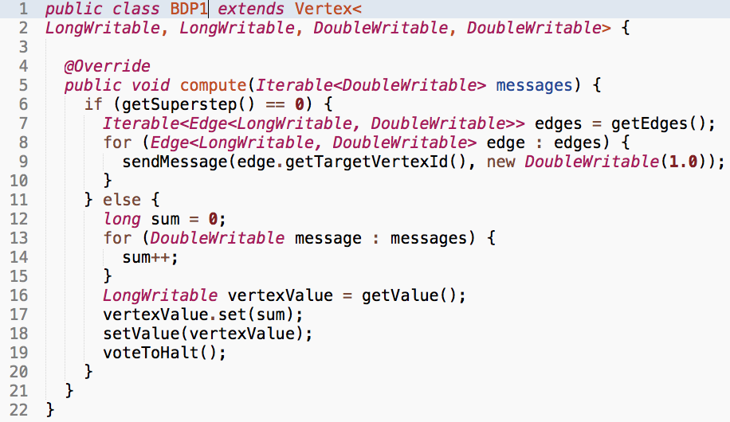

For graphs similar to the one shown below, how many iterations are at most required to compute parallel breadth-first search in Hadoop?

The max. number of iterations depends on the diameter of the graph.
Incorrect.
The max. number of iterations depends on the number of nodes in the graph.
Correct!
The max. number of iterations depends on the number of edges in the graph.
Incorrect.
The max. number of iterations does not depend on either of these three aspects (diameter, number of nodes, number of edges).
Incorrect.
You are given the Giraph code shown below. You can assume as input a directed graph (all edge weights are 1.0) which is encoded in adjacency list format (each node is encoded together with all its outgoing edges). What does this code compute?

A node's PageRank score.
Incorrect.
The shortest path between any two nodes in the graph.
Incorrect.
A node's inlink count.
Correct!
A node's outlink count.
Incorrect.
To compute breadth-first search in Giraph, what information needs to be send across the network for each superstep?
The entire graph structure.
Incorrect.
The recomputed distances.
Correct!
The nodes and their associated meta-data.
Incorrect.
The edges and their associated meta-data.
Incorrect.
To compute PageRank in Pregel, an Aggregator is used. What is it used for?
To compute the out-degree of each node.
Incorrect.
To compute the PageRank mass of dangling nodes.
Correct!
To compute the sum of all PageRank mass in the graph.
Incorrect.
To compute the PageRank score of each node.
Incorrect.
An aggregator in Giraph/Pregel is somewhat similar to a counter in Hadoop. What is the main difference?
Counters are meant to let machines communicate small values, aggregators are not meant to do that.
Incorrect.
Aggregators provide reliable values during the execution of a job, Counters only provide reliable values after the job has been executed.
Correct!
Counters can be used to terminate a job, based on the counter value. Aggregators cannot be used to achieve this.
Incorrect.
Aggregators and counters are the same. Only their names are different.
Incorrect.
Which of the following statements is true?
Vertices that have voted to halt in Pregel/Giraph ...
cannot be reactivated.
Incorrect.
can only be reactivated through an aggregator.
Incorrect.
can be reactivated through incoming messages.
Correct!
can be reactivated through the combiner.
Incorrect.
When Pregel/Giraph are used to compute the minimum existing vertex value in a directed graph, the final value read from an arbitrary vertex will always be correct if ...
the graph is strongly connected.
Correct!
the graph is weakly connected.
Incorrect.
the graph is bipartite.
Incorrect.
the graph has a bow-tie structure.
Incorrect.
What is the minimum number of supersteps required when using Pregel/Giraph to compute the outdegree of each vertex in a directed graph?
One superstep if the adjacency list of a vertex $v$ contains the IDs of all vertices linking to $v$.
Incorrect.
One superstep if the adjacency list of a vertex $v$ contains the IDs of all vertices that $v$ links to.
Correct!
Zero supersteps if the adjacency list of a vertex $v$ contains the IDs of all vertices that $v$ links to.
Incorrect.
Two supersteps if the adjacency list of a vertex $v$ contains the IDs of all vertices linking to $v$.
Incorrect.
When does the shuffling & sort phase take place in Giraph?
After every superstep.
Incorrect.
After every $n$ supersteps ($n$ can be set by the developer).
Incorrect.
Never.
Correct!
That depends on the task to solve; it can be switched on by the developer.
Incorrect.
Which of the following statements about Giraph are correct?